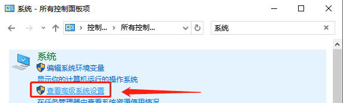

内存不足问题
-A
-B：增加 Speedpak 对内存影响的说明
问题：
“SOLIDWORKS 资源监控器”检测 “内存使用”限制超过 78% 时，将显示一系列警告。

SOLIDWORKS 资源监控器：用于监视您的 SOLIDWORKS软件或您的系统所使用的资源。当您运行的资源不足时，（大概是占用超 70%就开始提示）SOLIDWORKS资源监控器在 Windows任务栏的通知区域中提供信息，帮助您采取适当行动以避免系统故障或丢失数据。
你可能需要了解的内存小知识：即：计算机内存使用=物理内存+虚拟内存
“内存使用”：是系统提供或预留给 SOLIDWORKS以及任何其他运行在计算机上的进程的内存量。操作系统会建立”内存使用”的限制，即物理随机存储器(RAM) 的内存加上您的虚拟内存（分页内存）大小。（例如：计算机有 32 GB 的RAM，虚拟内存（分页内存）大小是 8 GB，那么”内存使用”限制为 40 GB）
Windows资源包括：
▪ 物理内存——系统中RAM的数量。
▪ 虚拟内存——Windows 为作为内存使用的一部分硬盘空间。
▪ 桌面堆——为用户对象(如窗口、菜单、游标、图标和菜单键盘快捷方式)保留的操作系统内存
▪ GDI对象——支持字体、位图、笔刷、钢笔和绘图表面等图形的资源
方法1虚拟内存
验证分页文件大小配置。建议使用”系统自动分配大小”。要验证您的分页文件大小，请执行以下步骤：
1.转至”控制面板”>“系统”。单击”高级系统设置”。
2.在”性能”组中，单击”设置”。

3.单击”高级”选项卡。在”虚拟内存”组中，单击”更改”。
4.确保”系统自动分配大小”选项至少在一个驱动器上处于激活状态。

通过分页文件确保操作系统和其他进程有更多的可用内存。例如，如果您没有分页文件，那么操作系统就不得不将物理内存提供给运行的进程。在您的计算机上可能有一个需要
2 GB 内存的进程，但仅使用了 500 MB。这意味着操作系统要强制预留 2 GB
的物理内存，不得由其他进程使用，而其中有 1.5 GB 物理内存未被激活使用。
方法2排除消耗内存最多进程
1.按下 Ctrl + Alt + Delete 并启动 Windows®”任务管理器”。
2.单击”性能”选项卡，然后单击”打开资源监视器”。
3.单击”内存”选项卡。
4.单击”提交
(KB)”列标题按降序排列。消耗提交内存最多的进程会显示在最顶部。
（如果有其他占用异常大的进程，则可用考虑临时退出，为 SW 设计让出资源）

利用该信息了解和调查管理消耗最多提交内存的进程的必要步骤。您可以尝试结束那些不需要的进程。
如果进程是基本进程，则调查其占用太多提交内存的原因。
如果进程不是 SOLIDWORKS进程，且您需要进一步协助，请咨询开发此进程的公司的支持团队。
如果您需要计算机上运行的所有进程，并且确定所有进程均按预期运行，那么您可能需要为您的计算机安装更多的物理内存。
方法3使用Speedpak
本次测试数据：6000+零部件（独立零件 1500 个），总装文件大小：95.4MB。全部文件大小：1.07GB。单纯还原打开需要7.8GB，全部部件Speedpak，如图的内存占用从 9GB 减少至 2GB，大大减少内存的占用。
关于 Speedpak 的使用方法，可以往期文章或视频。

方法4关闭提示
如果一切都正常，那可以关闭 SOLIDWORKS Resource Monitor 的所有通知
方法5GDI设置
通常情况下，用户看到该错误时，并不是RAM不足的原因（特别是有用户已经将内存加到了16GB或者32GB），而是GDI对象或用户对象达到了极限。我们可以通过修改注册表来解决这个问题。
浏览到如下位置，
1 | 计算机\HKEY_LOCAL_MACHINE\SOFTWARE\Microsoft\Windows NT\CurrentVersion\Windows |
设置以下的值：
a) GDIProcessHandleQuota ：256 ~ 65536，默认值为10000（十进制）可适当增加数值；
b) USERProcessHandleQuota ：200 ~ 18000，默认值为10000（十进制）可适当增加数值。
其他
这个错误信息不一定真的是客户的实际物理内存完全不够了，出现内存耗尽的可能原因常见的有：
内存耗尽
内存耗尽
情况1：系统
1 | 错误模块名称: windows.storage.dll，版本: 10.0.19041.4412，时间戳: 0x7a515b73 |
情况2：插件
使用PLM相关插件，启用时，会在小零件情况下也发生“内存耗尽，程序正在终止”的提示。
情况3：服务
开始> 运行 > 输入 ‘msconfig’ ，回车
到服务标签页，勾选‘隐藏所有 Microsoft 服务’
去除勾选所有服务(包含所有杀毒软件的服务，这些保留’SolidWorks Licensing Service’/SolidWorks Electrical Collaborative Server/ Dassault services/NVIDIA and office)
到开机启动标签页
去除Microsoft 、NVIDIA、office之外的所有服务器
测试是否有相同问题，如果没有，将其他服务器一个一个的勾选回来，重复操作设置 >>确认时哪个第三方服务有影响。
情况4：内存检查
使用VMMａｐ工具检查SOLIDWORKS实际使用虚拟内存情况，这个是Windows的官方工具，下载路径： http://technet.microsoft.com/en-us/sysinternals/dd535533.aspx
• 先开启SOLIDWORKS，然后运行这个工具，在列表里面选择sldworks.exe进程，在出现内存耗尽信息的时候，可以F5刷新：
• 看Largest 列，对应Free, 是否有足够的内存
• 看Heap行，也就是堆栈层，Commited列，是否占用很大内存。如果是，那么可能是存在堆栈数据内存溢出的情况。同样原理，也可以通过Commited列，看是否有其他类型内存溢出。
• 可能刚开始的时候SOLIDWORKS刚运行不会有内存耗尽的情况，但是可以着重观察，SOLIDWORKS运行一段时间后，或者打开某个大型装配体，图纸又关闭后，重新打开或者编辑某个简单零件的时候，看内存使用和释放情况。
内存泄漏
客户硬件确实有问题。例如出现了内存泄漏。
内存占用
客户设备上可用内存空间有限，在开启一些大型装配体或者文件，或者使用相对需要占用较多内存的命令，例如进行仿真分析等，出现内存耗尽，请和客户确认，是否他们仅在开启文件的时候出现内存耗尽的错误。
特定文件
客户的部分文件有问题，打开文件，显示内存耗尽，这个也同样要客户确认，内存耗尽，是否就是打开一些特定文件，或者包含有一些文件的装配体，就会出现。
新建文件检查：硬件和文件都没有问题，随机打开一个新建文件，部分电脑打开图纸，就会显示内存耗尽，这是之前的已知问题，和客户登录账号有特定字符或者空格有关，
Toolbox
有一部分客户端上toolbox有问题，开启的SOLIDWORKS Toolbox Utilities情况下，会有内存耗尽的错误，请帮客户确认，是否客户是在有开启toolbox的情况下，出现的内存耗尽错误。
PDM
还有部分客户端是由于文件在PDM中存储，开启PDM add-in的时候，打开部分特定文件会出现内存耗尽或者系统可用资源低的错误。